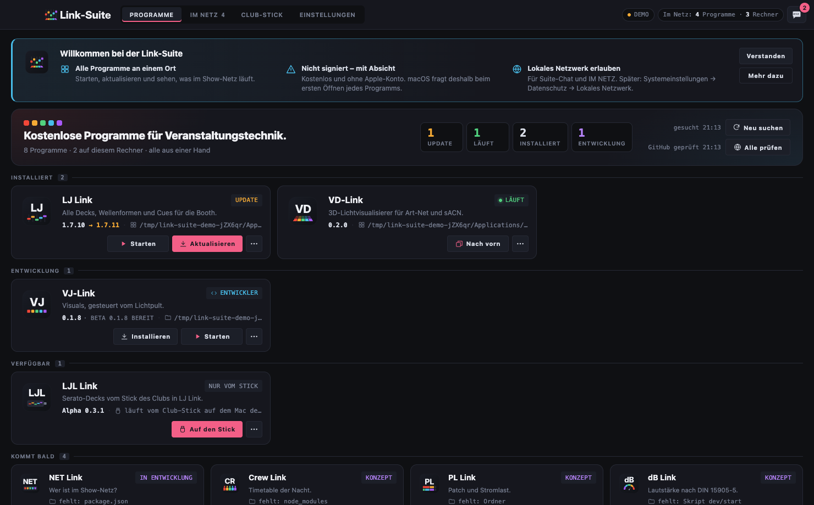
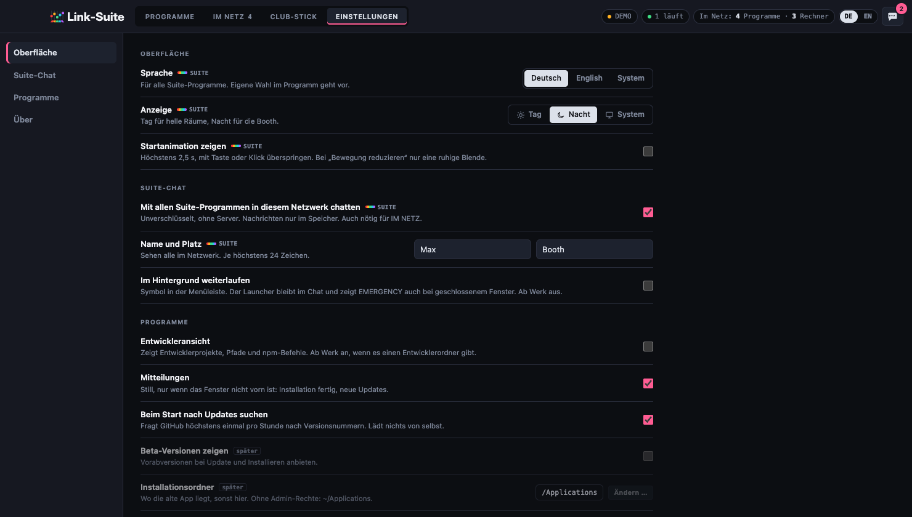

LJ Link
veröffentlichtmacOS · Windows
Zeigt dem Lichtjockey jedes Deck, jede Waveform und jeden Cue von Pioneer- und Denon-Geräten und schickt das Tempo an grandMA, Daslight und mehr.
Link-Suite ist das Zuhause der Link-Suite. Es zeigt alle Programme der Suite mit ihrem Stand, installiert und aktualisiert sie direkt aus GitHub, startet die auf diesem Rechner und listet die Suite-Programme, die es im Show-Netz hört – mit Suite-Chat und EMERGENCY.

Echter Screenshot von Link-Suite 0.3.2 im Demo-Modus: erfundene Ordner, Versionen und Personen.
Das ist die Alpha 0.3.2. Über Link-Suite bekommst du die Suite: Die Websites der Programme bieten Link-Suite zum Download an, und Link-Suite holt die Programme aus GitHub. Die Einzel-Downloads bleiben in den GitHub-Releases der Programme. Für macOS sagt die QA: 0.3.1 ist release-fertig; manches ist nur im Code geprüft. Die Windows-Version ist ebenfalls eine Alpha, getestet auf Windows 11. Link-Suite ist nicht bei Apple oder Microsoft signiert, deshalb warnen beide Systeme einmal beim ersten Start.
Die Link-Suite
Kostenlose Programme für Clubs, Festivals und Bühnen. Sie hören zu, zeigen und helfen – und sie reden im Show-Netz miteinander. Link-Suite hält sie zusammen.
Zeigt dem Lichtjockey jedes Deck, jede Waveform und jeden Cue von Pioneer- und Denon-Geräten und schickt das Tempo an grandMA, Daslight und mehr.
Bringt die Serato-Decks vom Mac des DJs in LJ Link in der Booth – direkt vom USB-Stick des Clubs, ohne Installation.
Live-Visuals, gesteuert vom Lichtpult, auf Bildschirmen, LED-Wänden und Beamern, im Takt der Musik aus LJ Link.
3D-Lichtvisualisierer für Art-Net und sACN: Dein Lichtpult steuert einen virtuellen Club oder ein Festival, und du siehst die Show, bevor sie hängt.
Kommt bald – in dieser Reihenfolge
Wer ist im Show-Netz? Findet IP-Konflikte, falsche Subnetze und fehlendes Multicast – und sagt, was zu ändern ist.
Timetable der Nacht: wer wann spielt, Countdown bis Set-Ende und Sperrstunde – eine Uhr für alle.
Patch und Stromlast: DMX-Adressen, Stromkreise, Kabel- und Packlisten, geplant, bevor das Rig hängt.
Lautstärke nach DIN 15905-5: messen, vor dem Grenzwert warnen und am Ende der Nacht ein Protokoll schreiben.
Termine gibt es nicht. Ein Programm steht hier als veröffentlicht, sobald es das ist.
Und das, das sie zusammenhält
Version 0.3.2
Eine neue Oberfläche, eine eigene Startanimation, Feinschliff für den Mac und ein Windows-Installer ohne Admin-Rechte – zusätzlich zum Installieren und Aktualisieren aus GitHub.
Oben die Kennzahlen, auf die es ankommt – Updates, läuft, installiert, Entwicklung –, darunter die Programme in Gruppen: Installiert, Entwicklung, Verfügbar, Kommt bald. Eine Pille je Karte.
LJ Link und VJ-Link mit einem Klick direkt aus ihren GitHub-Releases, jede Datei mit SHA-256 geprüft. Aktualisieren klappt auch mehrmals hintereinander; ein hängender Download bricht sauber ab.
„Auf den Stick“ legt LJL Link in einen Ordner oder direkt auf den USB-Stick des Clubs, mit kurzer Anleitung. Die club.json des Clubs kommt weiter von Hand daneben.
Die Programm-Icons fliegen in ihre Karten. Höchstens etwa 2 Sekunden, überspringbar, ruhig bei „Bewegung reduzieren“, abschaltbar.
Fenster ohne Titelleiste, Menüs mit Tastenkürzeln, Über-Fenster, Fortschritt und Update-Zahl am Dock-Symbol, stille Mitteilungen, Menüleisten-Symbol, Willkommen-Karte und ein ordentliches DMG-Fenster.
Der Installer installiert nur für deinen Benutzer, auf Deutsch oder Englisch.
Link-Suite prüft seine eigenen Releases genauso. Die neue Version wird beim Beenden eingesetzt.
Entwicklerprojekte mit Log-Leiste und Stoppen erscheinen erst, wenn du Entwicklerordner einträgst. Ohne sie: keine npm-Befehle, keine Entwickler-Pillen.
Derselbe Chatraum wie bei LJ Link, LJL Link und VJ-Link, ohne Server. Auf Wunsch bleibt Link-Suite in der Menüleiste (ab Werk aus).
Welches Suite-Programm auf welchem Rechner läuft, an welchem Platz, in welcher Version. Fremde Rechner fasst Link-Suite nie an.
Bilder
Echte Screenshots von Link-Suite 0.3.2 im Demo-Modus, mit erfundenen Ordnern, Versionen und Personen.





Grundsätze der Suite
Für jedes Programm der Link-Suite gelten dieselben Regeln, auch für Link-Suite selbst.
Link-Suite steuert kein Gerät und kein anderes Programm im Netz. Andere Rechner werden nur gezeigt, nie angefasst.
Keine Nutzungsdaten, keine Absturzberichte, kein Tracking. Auch diese Website hat keine Tracker.
Der Suite-Chat läuft zwischen den Programmen im lokalen Netz, ohne Server und ohne Anmeldung.
Link-Suite fragt nur GitHub nach neuen Releases der Suite und lädt die, die du auswählst. Jede Datei wird vor dem Einsetzen mit SHA-256 geprüft.
Nichts passiert ohne Klick. Alpha, Beta, „in Entwicklung“ und „nicht signiert“ stehen da, wo sie gelten.
Link-Suite sendet ins lokale Netz, solange der Suite-Chat an ist (ab Werk an, ausschalten in den Einstellungen), und fragt GitHub nach Releases.
| Daten | Wer sie bekommt |
|---|---|
| „Ich bin da“ alle 5 Sekunden: Programmname, Version, dein Name und Platz im Chat (wenn gesetzt), eine Zufallskennung | jedes Suite-Programm im lokalen Netz (Multicast 239.255.76.76:47676) |
| Chat-Nachrichten und EMERGENCY, die du sendest | jedes Suite-Programm im lokalen Netz |
| Antwort auf die Netzprüfung von NET Link, mit der IPv4-Adresse jedes Netzwerkadapters | das NET Link, das gefragt hat |
| „Tschüss“ beim Beenden | jedes Suite-Programm im lokalen Netz |
| Die Frage nach den neuesten Releases der Suite-Programme und die Downloads, die du startest | GitHub (api.github.com, github.com und die Download-Server von GitHub). Wie jede Website sieht GitHub deine IP-Adresse. Kein Name und keine Liste deiner Programme wird gesendet. |
| Deine installierten Programme, deine Ordner, das Log von Entwicklerprojekten | nie – bleibt auf diesem Rechner |
| Nutzungsdaten, Absturzberichte, Telemetrie | gibt es nicht |
Der Chat ist unverschlüsselt: Jeder im selben Netzwerk kann mitlesen, und die Programme im Raum geben die letzten Nachrichten an Neue weiter. Schreib nichts Vertrauliches. Ein Entwicklerprojekt, das du startest, ist ein eigenes Programm – was es tut, auch wenn npm Pakete lädt, legt das Projekt fest.
SHA256SUMS.sig) ist geplant. Hat ein Release schon eine, prüft Link-Suite sie bereits heute, und eine falsche stoppt die Installation.Weder Link-Suite noch die Programme, die es installiert, sind bei Apple oder Microsoft signiert. Die Programme schreibt Link-Suite selbst auf die Platte – so wie die eingebauten Updater von LJ Link und VJ-Link. macOS prüft sie dann nicht selbst; an seiner Stelle stehen die Prüfungen von Link-Suite oben.
EMERGENCY ist ein Hinweis-Popup fürs Team, keine Alarm- oder Sicherheitsanlage. Es ist eine Alpha, kann ausfallen oder verspätet ankommen, und jeder im selben Netzwerk kann es auslösen. Es ersetzt keine Durchsagen, Funkgeräte oder das Sicherheitskonzept der Veranstaltung.
Ehrlich zum Stand
SHA256SUMS.sig).club.json; Bonjour für die Weboberflächen der Suite-Programme.Download
Lade Link-Suite einmal. Es installiert und aktualisiert LJ Link, LJL Link und VJ-Link für dich, direkt aus GitHub, geprüft mit SHA-256. Kostenlos und Open Source.
Link-Suite ist nicht bei Apple oder Microsoft signiert. Eine Signatur kostet Geld und sagt nichts über die Sicherheit aus. Aber beide Systeme warnen deshalb einmal beim ersten Start. Lade Link-Suite nur von dieser Seite oder von GitHub.
Meldung: „Link-Suite“ nicht geöffnet – Apple konnte nicht überprüfen, ob „Link-Suite“ frei von Schadsoftware ist.
Nach einem Update kann macOS erneut nach dem lokalen Netzwerk fragen. Die App ist nicht signiert, deshalb hält macOS die neue Version für eine neue App. Erlaube es dann noch einmal.
Meldung: „Der Computer wurde durch Windows geschützt“ (Microsoft Defender SmartScreen).
Manche Virenscanner melden unbekannte, unsignierte Programme vorsorglich. Fragen oder Probleme? Discord oder fehlermelden@nextphilm.de. Ein eingebautes „Problem melden“ hat Link-Suite noch nicht.